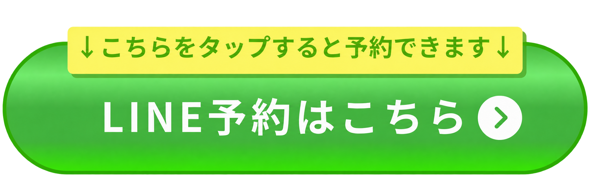
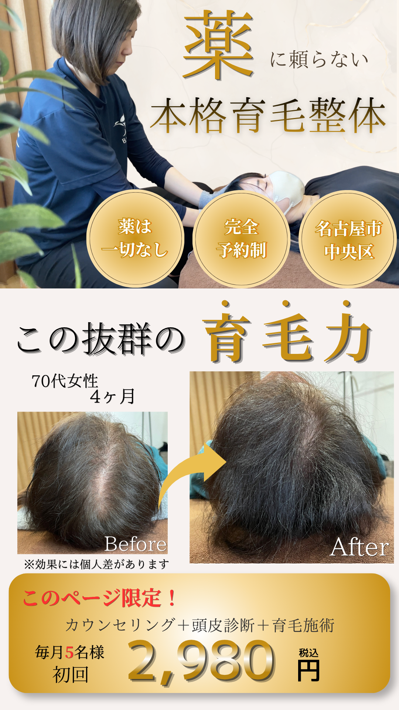
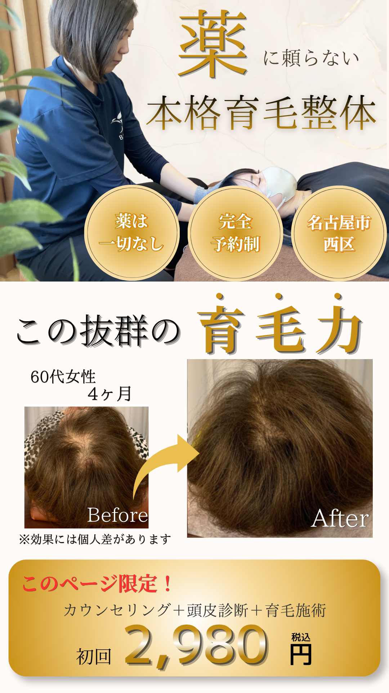
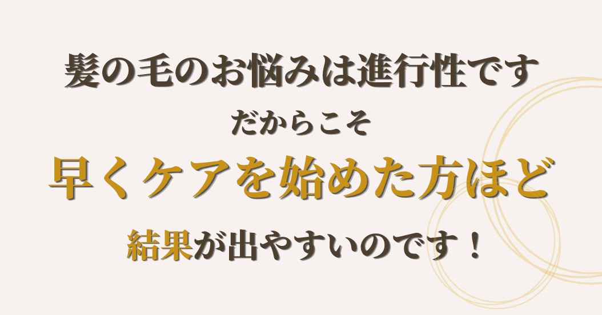
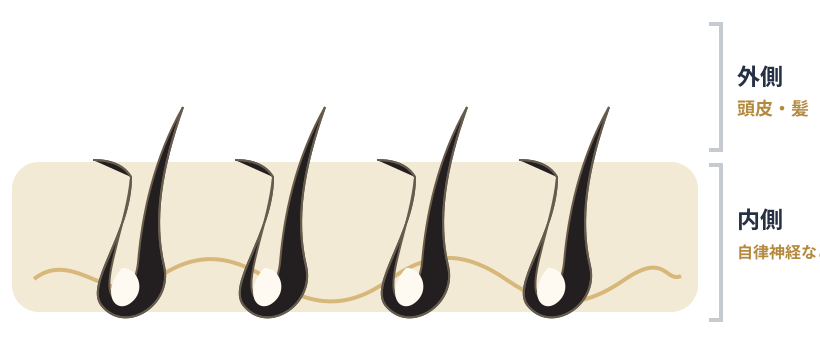
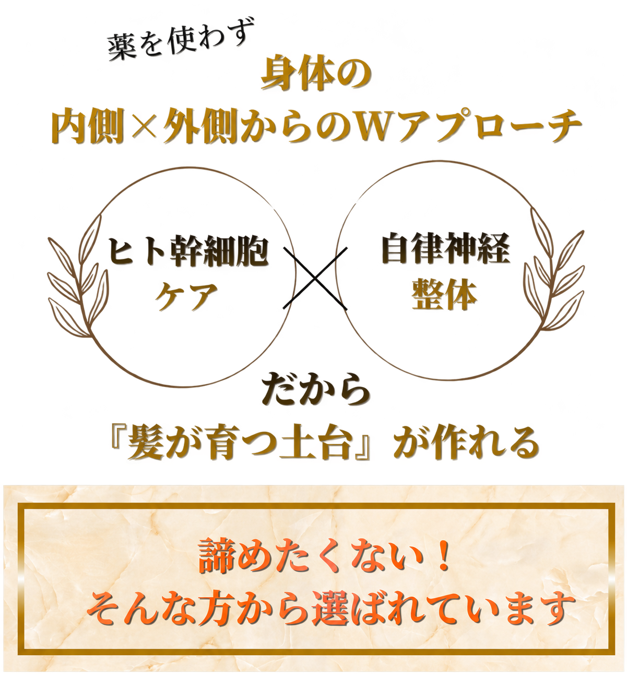
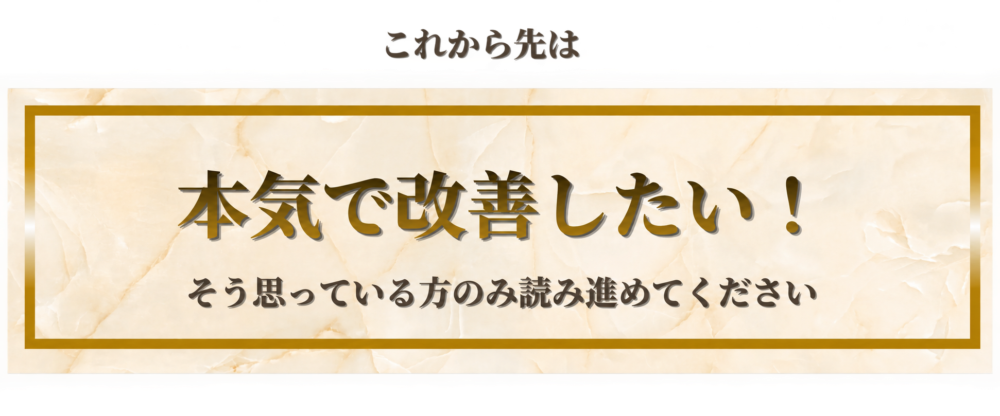
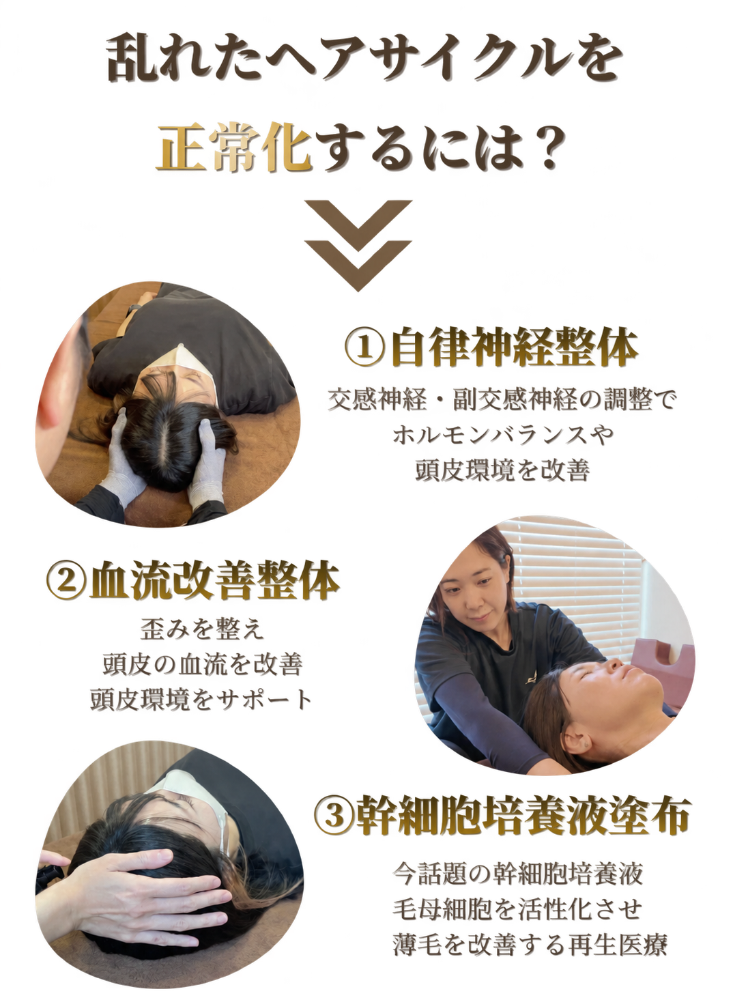

分け目の地肌が気にならなくなった！

→

若いうちから薄毛が気になっていましたが、4ヶ月で地肌が目立たなくなり、自信が持てました。
※個人の感想であり効果を保証するものではありません。




あなたも薬に頼らず、
「髪が育つ土台」
を取り戻しませんか？
頭皮（外側）と自律神経（内側）
両面からアプローチ


ビフォーアフター＆喜びの声 ↓↓↓
若いうちから薄毛が気になっていましたが、4ヶ月で地肌が目立たなくなり、自信が持てました。
※個人の感想であり効果を保証するものではありません。


シャンプー時の抜け毛が明らかに減少。薬を使わないので副作用の心配がなく、安心して続けられます。
※個人の感想であり効果を保証するものではありません。


後退が気になっていた生え際に変化が。ここまで変わるとは思っていませんでした。
※個人の感想であり効果を保証するものではありません。


濡れると地肌が目立つのが悩みでしたが、鏡を見るのが嫌じゃなくなりました。
※個人の感想であり効果を保証するものではありません。


自分では気づきにくいですが、家族から言われて嬉しかったです。毎回の頭皮チェックが楽しみです。
※個人の感想であり効果を保証するものではありません。


年齢的に諦めていましたが、頭頂部にハリとボリュームが。もっと早く始めればよかったです。
※個人の感想であり効果を保証するものではありません。
※効果には個人差がございます。生活習慣や体質により変化の度合いは異なります。
いきなり育毛の施術を受けに行くのは、
勇気がいる事だと思います。
こうした不安を解消していただく為に、初回体験をご用意しています。ただ今、ご予約が多数のため人数限定のご案内です。ご希望の方はお早めにご連絡をお願いいたします。
毎月限定先着 5 名様

ひとくちに「育毛」と言っても、いろいろな方法があります。
もしあなたが、
・とにかく今だけ隠せればいい
・育毛剤を塗るだけで済ませたい
とお考えであれば、残念ながら私たちはお力になれないかもしれません。
なぜなら、その場しのぎのケアは一時的にごまかしているだけで、やめれば元に戻ってしまうからです。
しかし、あなたが抜け毛の根本原因を整えて、薬に頼らず、髪が育ち続ける土台を手に入れたいのであれば──このページはあなたにとって、今後を変えるキッカケになるかもしれません。

頭皮に栄養が届きにくくなり、毛根が弱ります。

ストレスや生活習慣で、めぐりの土台が崩れます。

髪の成長サイクル（ヘアサイクル）に影響します。
毛が抜け、また新しい毛が生える
 成長期太く長い髪
成長期太く長い髪 退行期成長が止まる
退行期成長が止まる 休止期抜けて再生へ
休止期抜けて再生へ
 施術前（弱く細い）
施術前（弱く細い） 施術後（太く）
施術後（太く）多くの毛根は、まだ“生き残っています”。
わずかでも活性化できれば、
若々しい髪は取り戻せます。
当院では、ただ一時的に隠すだけでなく、薬に頼らず髪が育つ土台をつくる根本改善育毛をコンセプトにしています。
一般的なクリニックは通院中に薬でどれだけ抑えられるかだけを念頭に置いているため、やめた途端に元へ戻ってしまいがちです。
しかし当院では、施術中はもちろん、その後もご自身の力で維持していけるように、頭皮環境と体の内側の両方を整えます。だからこそ卒業後も調子がいいという声が続出しているのです。
他にも…
以上に1つでも当てはまったら、当院の育毛がきっとお役に立てます。
FLOW
リラックスできるプライベート空間でお迎えします。人目を気にせずご来院いただけます。

お悩みや生活習慣を丁寧にうかがいます。強引な勧誘は一切ありません。

マイクロスコープで頭皮・毛根の状態を確認し、原因を明確にします。

微弱電流で血流を促進し、美容成分が浸透しやすい頭皮環境へ整えます。

頭皮環境を整えたうえで幹細胞培養液を導入し、毛母細胞にアプローチします。

自律神経を整える整体で仕上げ。今後のおすすめプランをご納得いただいてからご案内します。
一人ひとり丁寧に施術するため毎月限定先着 5 名様枠が埋まり次第、受付を締め切ります。
Q & A
Aはい、もちろん可能です。無理な勧誘は一切ございませんので、「相談だけ」「お試しだけ」でも安心してご来院ください。
A基本的に副作用はありません。薬を使用しないため体への負担がほとんどなく、安心して受けていただけます。
A痛みはほとんどございません。リラックスして受けていただける、やさしい施術です。
Aはい。産後の抜け毛や分け目のお悩みなど、女性のお客様も多数ご来院いただいています。
Aはい、併用も可能です。カウンセリング時に、これまでの治療内容と当院に期待していることをお伝えいただければ、より適切なご提案ができます。
A完全予約制です。ご予約時間ぴったり、もしくは5分前にお越しください。ご予約はLINEから24時間受け付けています。
LAST MESSAGE
あなたには3つの道があります
1つ目
薄毛の悩みを抱えたまま、何もせずに時間が過ぎていくのを待つだけの道。
or
2つ目
効果の出ない育毛剤や高額な治療を試し続け、貴重なお金と時間を無駄にしていく道。
or
3つ目 おすすめ
薬に頼らず髪の土台から育てる育毛専門のビオ整体院に来院し、鏡を見るのが楽しみになる毎日を手に入れる道。
どの道を選ぶのも自由です。しかし、よく考えてみてください。
一生その悩みを我慢し続ける人生で
いいのですか？
迷いなく「NO！」と思えたなら、
今すぐご連絡ください。
ACCESS
| 院名 | ビオ整体院 庄内通院（育毛治療院） |
|---|---|
| 住所 | 〒451-0016 愛知県名古屋市西区庄内通4丁目24-6 Maisorie庄内通 201 |
| 交通 | 地下鉄鶴舞線「庄内通」駅 徒歩5分／1階に美容室のあるグレーの建物の2階 |
| 営業時間 | 10:00〜20:00 |
| 定休日 | 不定休 |
| 駐車場 | なし（近隣のコインパーキングをご利用ください） |